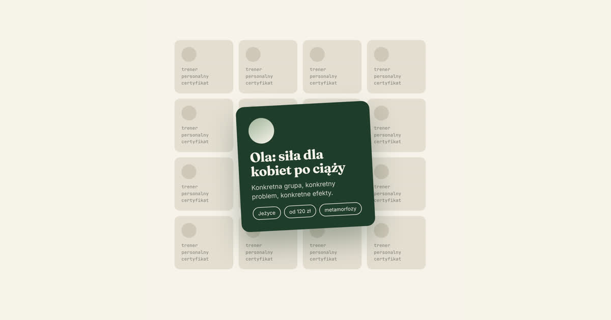

Rynek usług trenerskich w Polsce rośnie z roku na rok. To dobra wiadomość, dopóki nie spojrzysz na drugą stronę: rośnie też liczba trenerów walczących o tych samych klientów. Certyfikat już nie wystarcza. Dobre chęci też nie. Jeśli potencjalny klient wpisze w Google „trener personalny [Twoje miasto]”, zobaczy dziesiątki profili wyglądających niemal identycznie: zdjęcie na siłowni, hasło „pomogę Ci osiągnąć Twoje cele” i cennik gdzieś na dole strony albo wcale.
Wyróżnienie się nie polega na krzyczeniu głośniej. Chodzi o to, żeby dać się zapamiętać z konkretnego powodu.
1. Wybierz wąską specjalizację zamiast szerokiej oferty
„Trenuję każdego, w każdym celu” brzmi jak bezpieczna odpowiedź, ale w praktyce działa przeciwko Tobie. Klient szukający pomocy w konkretnej sprawie, jak powrót po kontuzji, przygotowanie do maratonu czy redukcja wagi po ciąży, ufa bardziej komuś, kto się w tym specjalizuje, niż komuś, kto robi wszystko po trochu.
Wąska specjalizacja rzadziej zawęża rynek, niż się wydaje, za to realnie odcina konkurencję, z którą się mierzysz.
2. Pokaż proces, nie tylko efekt
Zdjęcia „przed i po” są wszędzie i klienci już na nie tak nie reagują, jak kiedyś. Łatwo je zakwestionować, trudno zweryfikować. To, czego naprawdę brakuje w ofertach większości trenerów, to pokazanie jak pracujesz: np. jak wygląda pierwsza konsultacja czy jak reagujesz, gdy coś nie idzie zgodnie z założeniem. Transparentność procesu buduje zaufanie szybciej niż najlepsze zdjęcie sylwetki.
3. Miej stronę internetową, która pracuje za Ciebie
Profil na Instagramie to za mało, żeby zbudować zaufanie do kogoś, komu klient ma zapłacić za regularną współpracę. Strona internetowa pokazuje ofertę w sposób uporządkowany i działa 24 godziny na dobę, nawet gdy Ty akurat prowadzisz trening.
Dobra strona trenera personalnego powinna odpowiadać na trzy pytania w mniej niż 30 sekund: w czym się specjalizujesz, jak wygląda współpraca i jak się z Tobą skontaktować. Jeśli odwiedzający musi ich szukać, prawdopodobnie zamknie kartę i przejdzie do kolejnego wyniku w Google.
4. Nie bój się podać widełek cenowych
Większość trenerów i agencji budujących im strony chowa się za „wyceną indywidualną”. Rozumiem, skąd to się bierze: cena zależy od zakresu współpracy. Ale z perspektywy klienta brak jakiegokolwiek punktu odniesienia to bariera. Ostrożność wyglądałaby inaczej. Konkretne widełki cenowe nie odstraszają zdecydowanych klientów. Odstraszają tych, którzy i tak by nie skorzystali, więc to raczej sensowny filtr niż strata.
5. Zainwestuj w to, co zostaje na dłużej
Post na Instagramie żyje kilka godzin. Filmik na TikToku, jeśli się powiedzie, kilka dni. Strona internetowa i uporządkowana obecność online zostają z Tobą miesiącami i latami. Pracują w tle, podczas gdy Ty zajmujesz się tym, w czym jesteś najlepszy: trenowaniem ludzi. Content może poczekać.
Potrzebujesz strony, która faktycznie pomoże Ci się wyróżnić, zamiast wtapiać się w tło?
Umów bezpłatną konsultację